in parallel (Norton); maximum power reaches a load
in parallel (Norton); maximum power reaches a load Statement and origin
- KCL:
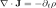
with no charge accumulating in nodes (Kirchhoff 1845). - KVL:
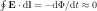
outside the elements (all magnetic flux inside inductors) — valid when dimensions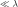
. - Element laws:
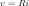
,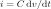
, , ideal sources.
, ideal sources.
Systematic analysis
Nodal: choose a reference, write KCL at the other  nodes in terms of node voltages:
nodes in terms of node voltages:
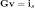
. Mesh: KVL around independent loops: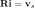
. Number of independent equations: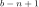
loops, nodes.
Thévenin (proof sketch)
By linearity, the port voltage is an affine function of the port current:
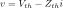
(Thévenin 1883). = open-circuit voltage; = impedance seen with independent sources zeroed (or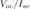
). Maximum power: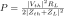
is maximal at , giving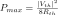
(peak phasors).Worked example
Wheatstone bridge: 10 V across
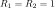
kΩ (left divider) and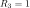
kΩ,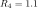
kΩ (right divider); galvanometer 500 Ω between midpoints. Left node 5 V; right node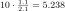
V: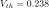
V;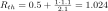
kΩ; galvanometer current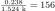
µA. Strain gauges and RTDs are read this way.Engineering applications
SPICE solves modified nodal analysis; Thévenin models of sensors, batteries and amplifier outputs; source/load matching; the small-signal analysis of transistor circuits.
Pitfall
Superposition applies to voltages and currents, never to power ( is quadratic). And dependent sources must not be zeroed when computing .
is quadratic). And dependent sources must not be zeroed when computing .